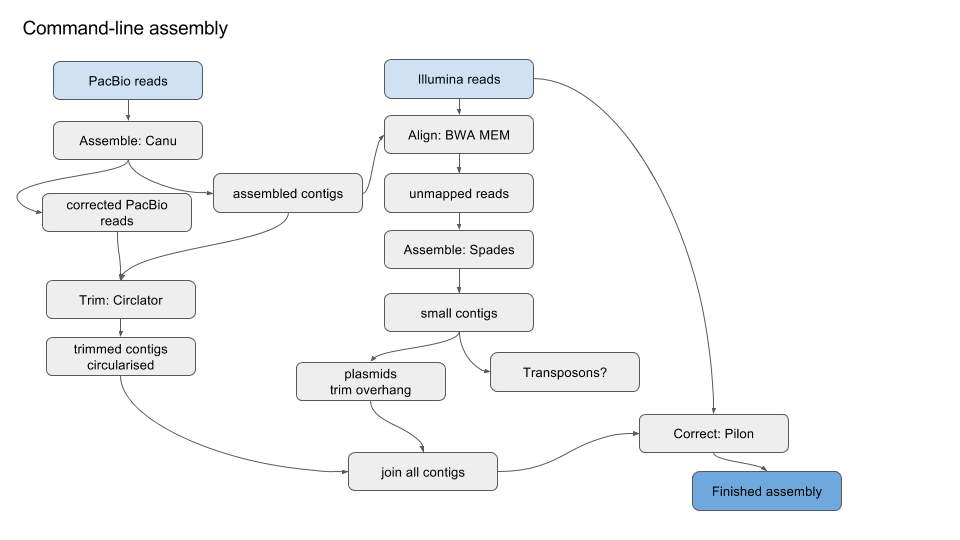
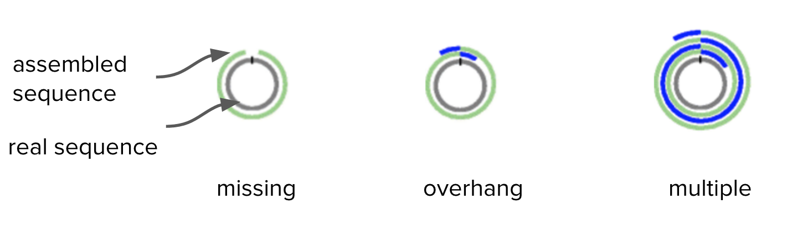
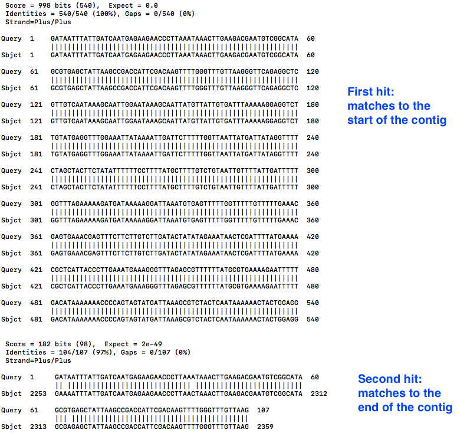
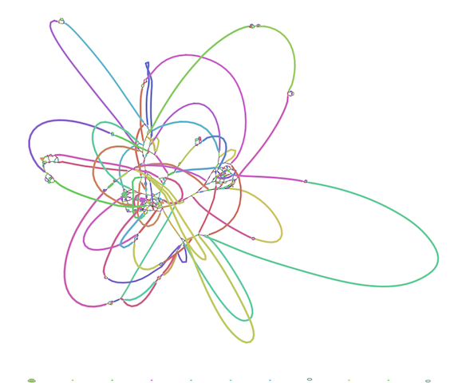
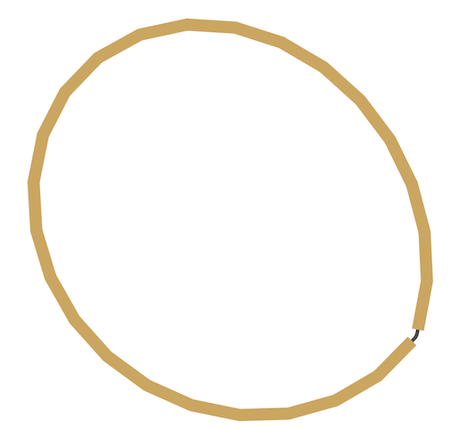

Long read assembly workshop
This is a tutorial for a workshop on long-read (PacBio) genome assembly.
It demonstrates how to use long PacBio sequencing reads to assemble a bacterial genome, and includes additional steps for circularising, trimming, finding plasmids, and correcting the assembly with short-read Illumina data.
Overview
Simplified version of workflow:

1. Get started
Your workshop trainers will provide you with the address of a virtual machine.
Mac users
Open the Terminal.
- Type in
ssh researcher@[your virtual machine address]
- Type in the password provided.
Windows users
If you are using Windows 10, you might be able to use the Ubuntu Subsystem. Otherwise, install and open Putty.
- Download putty here.
- Open. A configuration window will appear.
- Under "Host Name (or IP address)" enter in the address of your virtual machine.
- Under "Port" type in 22
- Under "Connection Type" select "SSH"
- Click "Open"
- Under "Login as:" enter "researcher"
- Type in the password provided.
Activate the conda environment
Type in:
source /mnt/gvl/apps/conda/bin/activate
(This points us to some different directories for the software we need).
Create a new working directory on your remote computer.
Because we are starting a new analysis it is always good practice to start in a new empty directory. Therefore, we will create a new directory and change to it for the rest of the workshop.
In your terminal:
- Create a new directory called "Workshop"
mkdir Workshop
- Change to that directory
cd Workshop
NOTE: Every time you open a new terminal or Putty session, you will need to make sure you are in this directory again.
Find your current directory by typing:
pwd
2. Get data
The sample used in this tutorial is from a bacteria called Staphylococcus aureus. We have used a small section of its real genome so that the programs can run in the workshop time.
The files we need are:
pacbio.fq : the PacBio readsR1.fq : the Illumina forward readsR2.fq : the Illumina reverse reads
In a new tab, go to https://doi.org/10.5281/zenodo.1009308.
- Next to the first file, right-click (or control-click) the "Download" button, and select "Copy link address".
- Back in your terminal, enter
wget [paste file link here]
- The file should download.
- Note: paste the link to the file, not to the webpage.
- Repeat this for the other two files.
Shorten each of these files names with the mv command:
mv R1.fq\?download\=1 R1.fq
mv R2.fq\?download\=1 R2.fq
mv pacbio.fq\?download\=1 pacbio.fq
Type in ls to check the files are present and correctly-named.
We should have
3. Assemble
We will use the assembly software called Canu, version 1.7.
Run Canu with these commands:
canu -p canu -d canu_outdir genomeSize=0.03m corThreads=3 -pacbio-raw pacbio.fq
- the first
canutells the program to run -p canunames prefix for output files ("canu")-d canu_outdirnames output directory ("canu_outdir")genomeSizeonly has to be approximate. (In this case we are using a partial genome of expected size 30,000 base pairs).corThreads=3sets the number of available threads.- Canu will correct, trim and assemble the reads.
- Various output will be displayed on the screen.
- Note: Canu could say "Finished" but may still be running. In this case, type
squeueto see if jobs are still running.
If you run squeue you will see something like this:
JOBID PARTITION NAME USER ST TIME NODES NODELIST(REASON)
6 main canu_can research PD 0:00 1 (Dependency)
5_1 main cormhap_ research R 0:29 1 master
You will know if Canu has completely finished when squeue shows no jobs listed under the header row.
4. Check assembly output
Move into the canu output folder:
cd canu_outdir
View the list of files:
ls
- The
canu.contigs.fasta are the assembled sequences. - The
canu.unassembled.fasta are the reads that could not be assembled. - The
canu.correctedReads.fasta.gz are the corrected Pacbio reads that were used in the assembly. - The
canu.contigs.gfa is the graph of the assembly. - The
canu.report file is a summary of all of the steps Canu performed with information about the reads used, how they were handled and a whole lot of summary information about the assembly.
Display summary information about the contigs: (infoseq is a tool from EMBOSS)
infoseq canu.contigs.fasta
- This will show the contigs found by Canu. e.g., tig00000001 47997
- "tig00000001" is the name given to the contig
- "47997" is the number of base pairs in that contig.
This matches what we were expecting for this sample (approximately 30,000 base pairs). For other data, Canu may not be able to join all the reads into one contig, so there may be several contigs in the output.
We should also look at the
less canu.report
- "less" is a command to display the file on the screen.
- Use the up and down arrows to scroll up and down.
- You will see lots of histograms of read lengths before and after processing, final contig construction, etc.
- For a description of the outputs that Canu produces, see: http://canu.readthedocs.io/en/latest/tutorial.html#outputs
- Type
qto exit viewing the report.
Questions
How do long- and short-read assembly methods differ?
Answer (click to reveal)
Short reads are usually assembled with De Bruijn graphs. For long reads, there is a move back towards simpler overlap-layout-consensus methods.Where can we find out the what the approximate genome size should be for the species being assembled?
Answer (click to reveal)
Go to NCBI Genomes, enter species name, click on Genome Assembly and Annotation report, sort table by clicking on the column header Size (Mb), look at range of sizes in this column.In the assembly output, what are the unassembled reads?
Answer (click to reveal)
Reads and low-coverage contigs that were not used in the assembly.What are the corrected reads? How did canu correct the reads?
Answer (click to reveal)
Canu builds overlaps between reads. The consensus is used to correct the reads.Where could you view the output .gfa and what would it show?
Answer (click to reveal)
A useful program is [Bandage](https://rrwick.github.io/Bandage/). If the assembly has multiple contigs, the assembly graph shows how these are connected.5. Trim and circularise
Bacteria have circular chromosomes.
- Because of sequencing errors, there may be some "overhang" in the assembled linear sequence.
- Our assembly may have some overhang because it is 9000 bases longer than expected.
 Adapted from Figure 1. Hunt et al. Genome Biology 2015
A tool called Circlator identifies and trims overhangs (on chromosomes and plasmids). It takes in the assembled contigs from Canu, as well as the corrected reads prepared by Canu.
Move back into your main analysis folder:
cd ..
Run Circlator
circlator all --threads 4 --verbose canu_outdir/canu.contigs.fasta canu_outdir/canu.correctedReads.fasta.gz circlator_outdir
-
(Click on the dark grey slider bar above and move it to the right, to see all the way to the end of the line.)
-
--threadsis the number of cores --verboseprints progress information to the screencanu_outdir/canu.contigs.fastais the file path to the input Canu assemblycanu_outdir/canu.correctedReads.fasta.gzis the file path to the corrected Pacbio reads - note, fastA not fastQcirclator_outdiris the name of the output directory.
Some output will print to screen. When finished, it should say "Circularized x of x contig(s)".
Check the output
Move into the Circlator output directory:
cd circlator_outdir
List the files:
ls
Circlator has named the output files with numbers as prefixes.
Were the contigs circularised?
less 04.merge.circularise.log
- "less" is a command to display the file on the screen.
04.merge.circularise.log is the name of the file.- Yes, the contig was circularised (last column).
- Type
qto exit.
What are the trimmed contig sizes?
infoseq 06.fixstart.fasta
- The contig "tig00000001" has a length of 30019.
- This is about 18,000 bases shorter than before circularisation. This was the "overhang" and has now been trimmed.
Copy the circularised contigs file to the main analysis directory with a new name:
cp 06.fixstart.fasta ../contig1.fasta
Move back into the main folder:
cd ..
Questions
Were all the contigs circularised?
Answer (click to reveal)
In this example, yes, the contig was circularised.Circlator can set the start of the sequence at a particular gene. Which gene does it use? Is this appropriate for all contigs?
Answer (click to reveal)
Circlator uses dnaA (if present) for the chromosomal contig. For other contigs, it uses a centrally-located gene. However, ideally, plasmids would be oriented on a gene such as repA. It is possible to provide a file to Circlator to do this.6. Find smaller plasmids
Pacbio reads are long, and may have been longer than small plasmids. We will look for any small plasmids using the Illumina reads.
This section involves several steps:
- Use the Canu+Circlator output of a trimmed assembly contig.
- Map all the Illumina reads against this Pacbio-assembled contig.
- Extract any reads that didn't map and assemble them together: this could be a plasmid, or part of a plasmid.
- Look for overhang: if found, trim.
Align Illumina reads to the PacBio contig
Index the contigs file:
bwa index contig1.fasta
Align Illumina reads using using bwa mem:
bwa mem -t 4 contig1.fasta R1.fq R2.fq | samtools sort > aln.bam
bwa memis the alignment tool-t 4is the number of corescontig1.fastais the input assembly fileR1.fq R2.fqare the Illumina reads| samtools sortpipes the output to samtools to sort> aln.bamsends the alignment to the filealn.bam
Extract unmapped Illumina reads
Index the alignment file:
samtools index aln.bam
Extract the fastq files from the bam alignment - those reads that were unmapped to the Pacbio alignment - and save them in various "unmapped" files:
samtools fastq -f 4 -1 unmapped.R1.fastq -2 unmapped.R2.fastq -s unmapped.RS.fastq aln.bam
fastqis a command that coverts a.bam file into fastq format-f 4: only output unmapped reads-1: put R1 reads into a file calledunmapped.R1.fastq -2: put R2 reads into a file calledunmapped.R2.fastq -s: put singleton reads into a file calledunmapped.RS.fastq aln.bam: input alignment file
We now have three files of the unampped reads:
Assemble the unmapped reads
Assemble with Spades:
spades.py -1 unmapped.R1.fastq -2 unmapped.R2.fastq -s unmapped.RS.fastq --careful --cov-cutoff auto -o spades_assembly
-
(Click on the dark grey slider bar above and move it to the right, to see all the way to the end of the line.)
-
-1is input file forward -2is input file reverse-sis unpaired--carefulminimizes mismatches and short indels--cov-cutoff autocomputes the coverage threshold (rather than the default setting, "off")-ois the output directory
Move into the output directory:
cd spades_assembly
Look at the contigs:
infoseq contigs.fasta
- 1 contig has been assembled with a length of 2359 bases.
Copy it to a new file:
cp contigs.fasta contig2.fasta
Trim the plasmid
To trim any overhang on this plasmid, we will blast the start of contig2 against itself.
Take the start of the contig:
head -n 10 contig2.fasta > contig2.fa.head
head -n 10takes the first ten lines ofcontig2.fasta -
>sends that output to a new file calledcontig2.fa.head -
We want to see if the start of the contig matches the end (overhang).
Format the assembly file for blast:
makeblastdb -in contig2.fasta -dbtype nucl
makeblastdbmakes a database for the tool Blast- This will generate three new files in the directory with suffixes .nhr, .nin and .nsq
-insets the input file ascontig2.fasta -dbtype nuclsets the type to nucleotide (rather than protein)
Blast the start of the assembly (.head file) against all of the assembly:
blastn -query contig2.fa.head -db contig2.fasta -evalue 1e-3 -dust no -out contig2.bls
blastnis the tool Blast, set as blastn to compare sequences of nucleotides to each other-querysets the input sequence ascontig2.fa.head -dbsets the database as that of the original sequencecontig2.fasta . We don't have to specify the other files that were created when we formatted this file, but they need to present in our current directory.-evalueis the number of hits expected by chance, here set as 1e-3-dust noturns off the masking of low-complexity regions-outsets the output file ascontig2.bls
Look at the hits (the matches):
less contig2.bls
- The first hit is at the start, as expected. We can see that "Query 1" (the start of the contig) is aligned to "Sbject 1" (the whole contig), for the first 540 bases.
- Scroll down with the down arrow.
- The second hit shows "Query 1" (the start of the contig) also matches to "Sbject 1" (the whole contig) at position 2253, all the way to the end, position 2359.

- This is the overhang.
- Therefore, in the next step, we need to trim the contig to position 2252.
- Type
qto exit.
First, change the name of the contig within the file:
nano contig2.fasta
nanoopens up a text editor.- Use the arrow keys to navigate. (The mouse won't work.)
- At the first line, delete the text, which will be something like ">NODE_1_length_2359_cov_3.320333"
- Type in ">contig2"
- Don't forget the
>symbol - Press Control-X
- "Save modified buffer ?" - type
Y - Press the Enter key
Index the file (this will allow samtools to edit the file as it will have an index):
samtools faidx contig2.fasta
faidxmeans index the fasta file
Trim the contig:
samtools faidx contig2.fasta contig2:1-2252 > plasmid.fasta
- this extracts contig2 from position 1-2252
-
> plasmid.fastasends the extracted section to a new file -
We now have a trimmed plasmid.
Copy the plasmid file into the main folder:
cp plasmid.fasta ../
Move file back into main folder:
cd ..
Collect contigs
Collect the chromosome and the plasmid in one fasta file (they will be 2 records in the file):
cat contig1.fasta plasmid.fasta > genome.fasta
See the contigs and sizes:
infoseq genome.fasta
- chromosome: 30019
- plasmid: 2252
Questions
Why is this section so complicated?
Answer (click to reveal)
Finding small plasmids is difficult for many reasons! This paper has a nice summary: On the (im)possibility to reconstruct plasmids from whole genome short-read sequencing data. doi: https://doi.org/10.1101/086744Why can PacBio sequencing miss small plasmids?
Answer (click to reveal)
Library prep size selection.We extract unmapped Illumina reads and assemble these to find small plasmids. What could they be missing?
Answer (click to reveal)
Repeats that have mapped to the PacBio assembly.How do you find a plasmid in a Bandage graph?
Answer (click to reveal)
It is probably circular, matches the size of a known plasmid, and has a rep gene.Are there easier ways to find plasmids?
Answer (click to reveal)
Possibly. One option is the program called Unicycler which may automate many of these steps. https://github.com/rrwick/Unicycler7. Correct the assembly
Sequences from PacBio can have more errors than those from Illumina. Therefore, although it is useful to use the long PacBio reads to assemble the genome, we can also use the shorter and more accurate Illumina reads to correct errors in the PacBio assembly.
Make an alignment file
Index the fasta file:
bwa index genome.fasta
Align the Illumina reads:
bwa mem -t 4 genome.fasta R1.fq R2.fq | samtools sort > pilon_aln.bam
- Aligns Illumina
R1.fq andR2.fq to the PacBio assemblygenome.fasta . - This produces a .bam file
|pipes the output to samtools to sort (required for downstream processing)> pilon_aln.bamredirects the sorted bam to this file
Index the files:
samtools index pilon_aln.bam
samtools faidx genome.fasta
- Now we have an alignment file to use with the tool Pilon:
pilon_aln.bam
Run Pilon
Run:
pilon --genome genome.fasta --frags pilon_aln.bam --output pilon1 --fix all --mindepth 0.5 --changes --verbose --threads 4
--genomeis the name of the input assembly to be corrected--fragsis the alignment of the reads against the assembly--outputis the name of the output prefix--fixis an option for types of corrections--mindepthgives a minimum read depth to use--changesproduces an output file of the changes made--verboseprints information to the screen during the run--threads: number of cores
Look at the changes file:
less pilon1.changes
Example:

- We can see lots of cases where a deletion (represented by a dot) has been corrected to a base.
- Type
qto exit.
Look at the details of the fasta file:
infoseq pilon1.fasta
- chromosome - 30059 (net +40 bases)
- plasmid - 2252 (no change)
Change the file name:
cp pilon1.fasta assembly.fasta
We now have the corrected genome assembly of Staphylococcus aureus in .fasta format, containing a chromosome and a small plasmid.
Questions
Why don't we correct earlier in the assembly process?
Answer (click to reveal)
We need to circularise the contigs and trim overhangs first.Why can we use some reads (Illumina) to correct other reads (PacBio) ?
Answer (click to reveal)
Illumina reads have higher accuracy.Could we just use PacBio reads to assemble the genome?
Answer (click to reveal)
Yes, if accuracy adequate.8. Comparative Genomics
In the workshop so far, we used a partial bacterial genome so that the exercises could run in the time available. As a demonstration, to better see the effect of long and short reads on the assembly, we will examine a complete bacterial genome.
Assemblies
This bacterial genome has been assembled from either long PacBio reads (using Canu) or shorter Illumina reads (using Spades).
Assembly graphs:
Look at the assembly graph (usually has a suffix .gfa), in the program Bandage. This shows how contigs are related, albeit with ambiguity in some places.
The assembly graph from Illumina reads (Spades assembly):

The assembly graph from PacBio reads (Canu assembly) - this is missing the small plasmid:

Here we can see that the long read data results in a more contiguous assembly - one complete chromosome versus many smaller contigs with ambiguous placement.
Does it matter that an assembly is in many contigs?
Answer (click to reveal)
Yes and No. Yes: broken genes can lead to missing/incorrect annotations; fragmented assemblies provide less information about the genomic structure (*e.g.* the number of plasmids) and the location of genes of interest (*e.g.* gene A is located on plasmid X). No: many or all genes may still be annotated correctly. Gene location is useful (e.g. chromosome, plasmid1) but not always essential (e.g. presence/absence of particular resistance genes may be enough information).Annotations
Genomic features such as genes can be identified with annotation tools. We have used a tool called Prokka to annotate the two genomes described above.
Some of the output data is displayed here:
| assembly: | PacBio | Illumina |
|---|---|---|
| size | 2,825,804 | 2,792,905 |
| contigs | 2 | 123 |
| CDS | 2614 | 2575 |
| tRNA | 61 | 65 |
| rRNA | 19 | 4 |
Why are there more CDS identified in the PacBio assembly?
Answer (click to reveal)
The PacBio assembly may have errors (usually a one base indel) which will cause a frame shift, which can result in three things: a longer CDS, a shorter CDS, or a shorter CDS plus an additional CDS. In addition, the Illumina assembly is about 33 kb smaller than the PacBio assembly. In bacteria, a rule of thumb is that 1 kb is roughly equal to one gene. Thus, we would probably expect about 33 fewer identified genes, which fits with these results.Why are there more rRNA identified in the PacBio assembly?
Answer (click to reveal)
There may be multiple copies of the rRNAs and these could have been collapsed as repeats in the Illumina assembly.9. Summary
In this workshop, we used bacterial sequencing data from long and short reads to produce a polished genome.
Procedure and tools:
- Canu to assemble long-read PacBio data
- Circlator to trim and circularise contigs
- BWA-MEM to map shorter Illumina reads to the PacBio assembly
- Spades to assemble any unmapped, leftover Illumina reads (the plasmid)
- Pilon to correct the PacBio assembly with the more accurate Illumina reads
We also looked at comparative genomics:
- Bandage to examine assembly graphs
- Prokka to annotate genomes with features such as genes
Further research:
- Align genomes with Mauve: tutorial link
- Find core and pan genomes with Roary and Phandango: tutorial link
Melbourne Bioinformatics tutorials:
- https://www.melbournebioinformatics.org.au/tutorials/
Additional microbial genomics tutorials:
- http://sepsis-omics.github.io/tutorials/ and https://galaxy-au-training.github.io/tutorials/